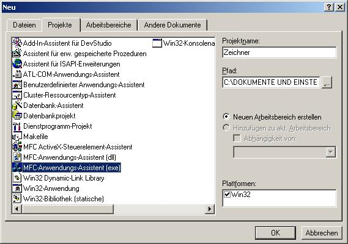
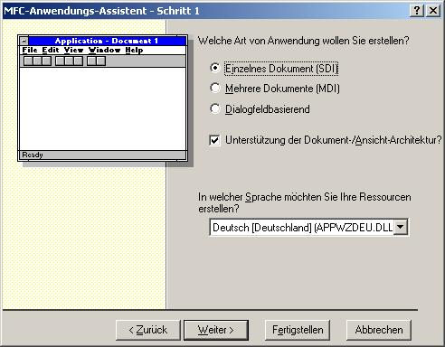
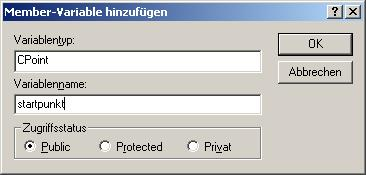
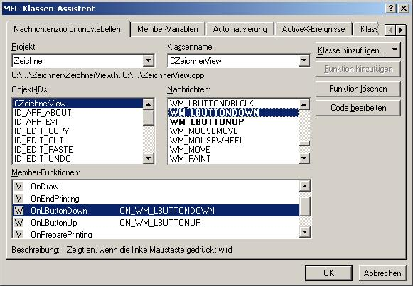

Zeichnen mit MFC
Einleitung
Um diese Anleitung nicht zu lang werden zu lassen, schreibe ich immer nur die Dinge auf, die verändert werden müssen. Bei Codeabschnitten werden die Teile, die von mir verändert wurden fett geschrieben.
Beispiel
Aufgabe
Es soll ein Programm geschrieben werden, das Striche mit der Maus zeichnet. Wird eine Maustaste gedrückt, wird der Startpunkt der Linie gesetzt; wird sie wieder losgelassen, wird eine Linie vom Startpunkt bis zum Punkt des Loslassens der Maustaste gezogen.
Lösung in Prosa
- Datei -> Neu..
- MFC-Anwendungs-Assistent
Anwendungsname : Zeichner

- Schritt 1 : Einzelnes Dokument (SDI) -> Fertigstellen (Mehr einzustellen ist nicht notwendig) -> OK

- Nun wird eine Variable gebraucht, in der ich mir den Startpunkt merken kann. Dazu einfach mit der rechten Maustaste auf die Klasse CZeichnerView drücken.
-> Member-Variable hinzufügen...
-> Variablentyp = CPoint; Variablenname = startpunkt;
-> OK
Und gleich noch eine Variable für den Endpunkt, nun mit dem Namen 'endpunkt' und dem gleichen Variablentyp 'CPoint'.

- Jetzt muss das Ereigniss Maus drücken abgefangen werden. (das heißt selber einen Handler dafür schreiben)
Ansicht -> Klassen-Assistent
Klassenname : CZeichnerView
Nachrichten : WM_LBUTTONDOWN -> Funktion hinzufügen -> Code bearbeiten
Nun hat man einen Handler, der immer dann aufgerufen wird, wenn die linke Maustaste gedrückt wird.

- Handler sollte so aussehen:
void CZeichnerView::OnLButtonDown(UINT nFlags, CPoint point)
{
// TODO: Code für die Behandlungsroutine für Nachrichten hier einfügen und/oder Standard aufrufen
startpunkt = point;
CView::OnLButtonDown(nFlags,point);
}
- Nun brauchen wir noch einen Handler für das Loslassen der Maustaste
Ansicht -> Klassen-Assistent
Klassenname : CZeichnerView
Nachrichten : WM_LBUTTONUP -> Funktion hinzufügen -> Code bearbeiten
Nun hat man einen Handler, der immer dann aufgerufen wird, wenn die linke Maustaste losgelassen wird.
- Handler sollte so aussehen:
void CZeichnerView::OnLButtonDown(UINT nFlags, CPoint point)
{
// TODO: Code für die Behandlungsroutine für Nachrichten hier einfügen und/oder Standard aufrufen
// Merken des Endpunktes
endpunkt = point;
// Neuzeichnen des Bildschirms veranlassen, ohne dass der Bildschirm vorher gelöscht wird.
Invalidate(false);
CView::OnLButtonUp(nFlags,point);
}
-
Da die Variablen für Start- und Endpunkt beim ersten Zeichnen, das schon beim Programmstart ausgeführt wird, undefinierte Werte enthalten können, sollten sie vorher initialisiert werden. Dies wird am Besten im Konstruktor von CZeichnerView erledigt.
Hinweis:
Konstruktor schaut aus wie Methode (Funktion der Klasse), hat aber keinen Rückgabewert (nicht mal void) und hat den gleichen Namen wie die Klasse. ( in unserem Fall CZeichnerView())
Der Konstruktor sollte dann so aussehen:
CZeichnerView::CZeichnerView()
{
// ZU ERLEDIGEN: Hier Code zur Konstruktion einfügen
startpunkt = CPoint(0,0);
endpunkt = CPoint(0,0);
}
-
Nun muss das Ganze nur noch gezeichnet werden, und dass passiert in der Methode OnDraw der Klasse CZeichnerView.
OnDraw sollte dann so aussehen:
void CZeichnerView::OnDraw(CDC* pDC)
{
CZeichnerDoc* pDoc = GetDocument();
ASSERT_VALID(pDoc);
// Verschiebe Grafikcursor zu Position startpunkt (ohne zu zeichnen)
pDC->MoveTo(startpunkt);
// Zeichne Linie zum endpunkt
pDC->LineTo(endpunkt);
// ZU ERLEDIGEN: Hier Code zum Zeichnen der ursprünglichen Daten hinzufügen
}
- Fertig